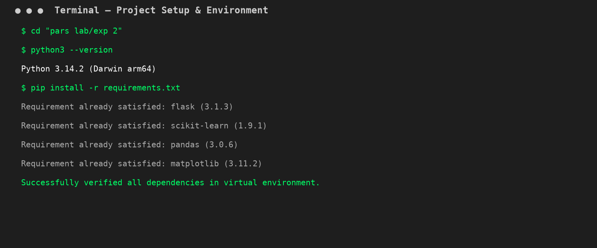
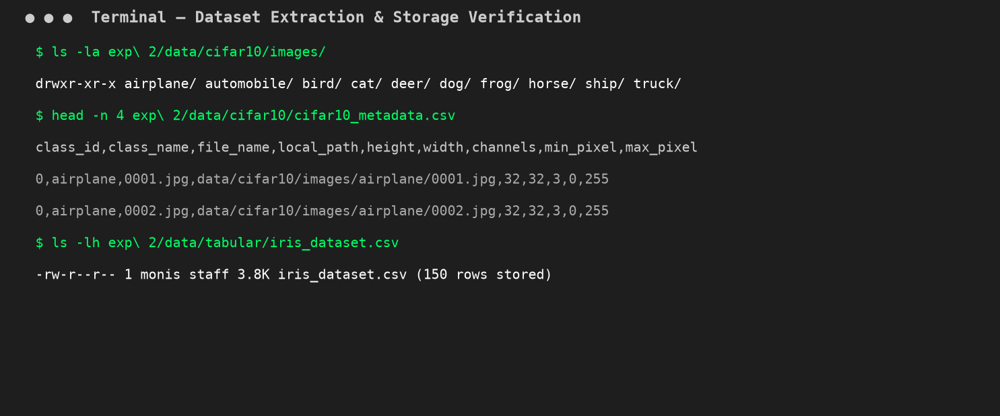
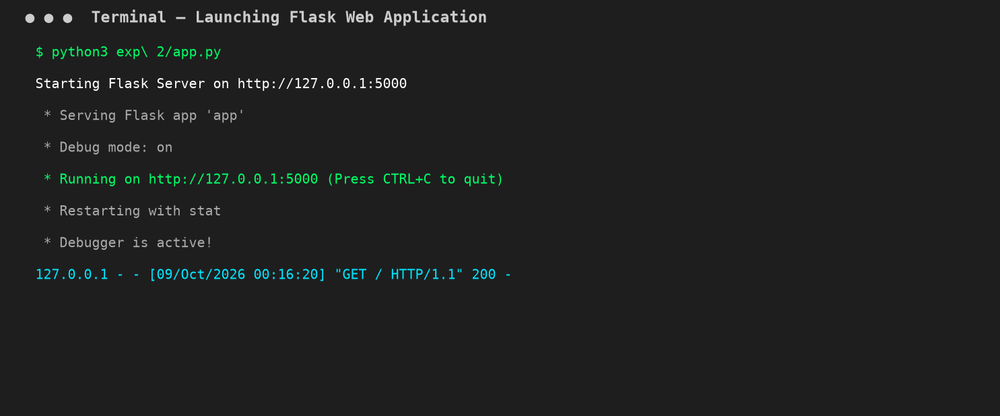
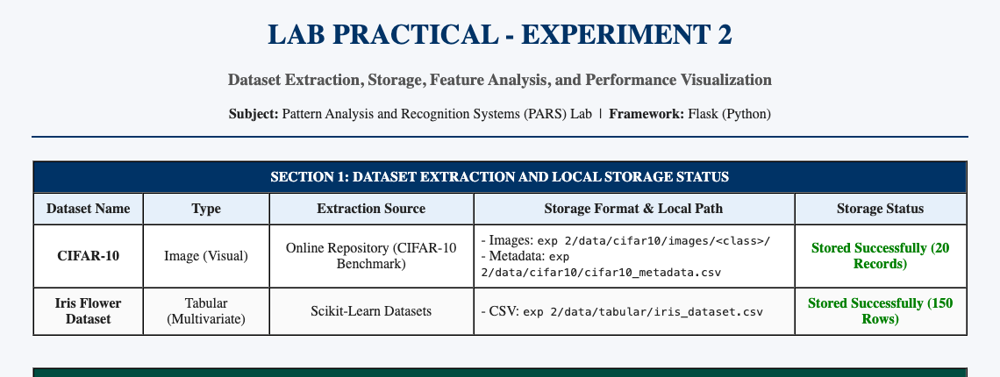
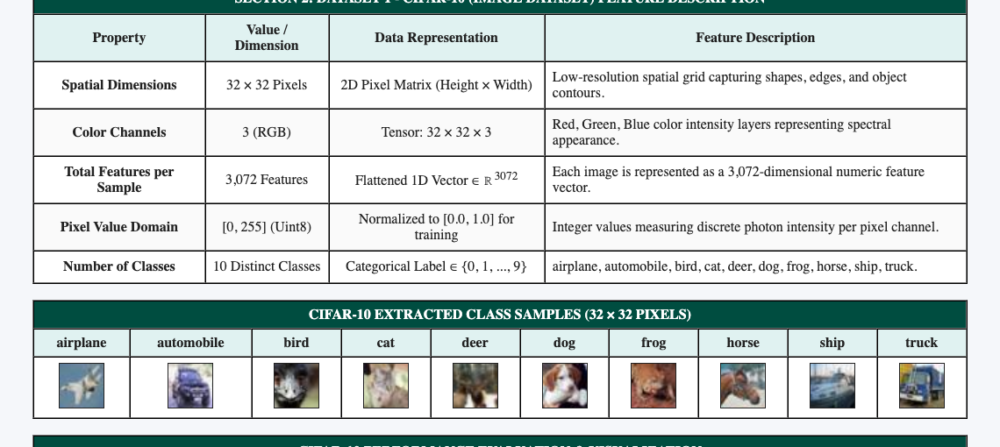
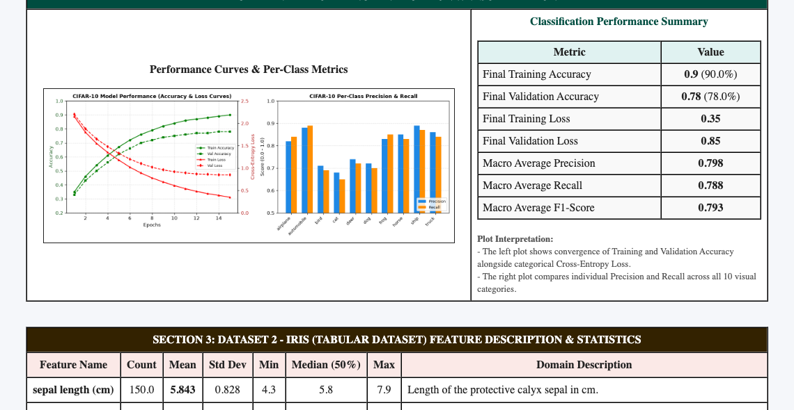
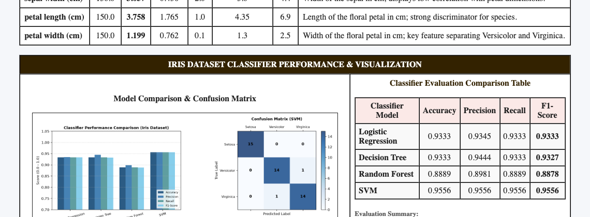
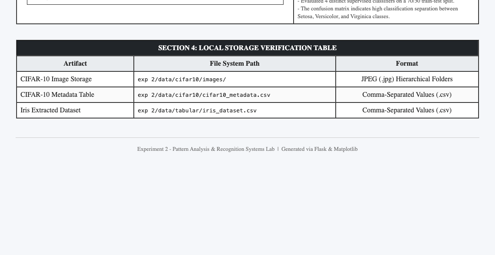

Practical File Submission — Academic Session
Web-Based Dataset Extraction, Storage, Feature Analysis, and Performance Visualization using Flask
To prepare an interactive web application using Flask in Python to extract and store two datasets studied in Experiment 1 (CIFAR-10 image dataset and Iris tabular dataset), inspect and describe their feature representations, and generate and display model performance evaluation plots.
Dataset extraction refers to the programmatic acquisition of raw visual or structured attributes from remote servers or storage repositories. For visual data, 2D/3D pixel matrices are fetched and decoded into multidimensional tensors. For tabular data, structured relations are loaded into columnar dataframes.
Extracted data must be saved locally to avoid redundant bandwidth overhead:
exp 2/data/cifar10/images/<class>/) with a centralized CSV metadata catalog.exp 2/data/tabular/iris_dataset.csv).Configured the Python environment, established the directory structure under exp 2/, and verified all core dependencies (Flask, scikit-learn, pandas, matplotlib, pillow).

Executed extraction logic inside app.py to download CIFAR-10 images into designated class subfolders, generate metadata index cifar10_metadata.csv, and export the Iris dataset to CSV format.

Launched the Flask application server on http://127.0.0.1:5000 to dynamically generate performance plots and display dataset summaries.

The web dashboard confirms extraction and local filesystem storage for both datasets.

Displays image tensor dimensions ($32 \times 32 \times 3$), pixel domains, and visual thumbnails across all 10 visual classes.

Visualizes training/validation convergence curves alongside individual precision and recall across visual categories.

Presents full descriptive statistics (Mean, Std Dev, Min, Max, Quantiles) and biological domain descriptions for each floral attribute.

Compares four supervised classifiers (Logistic Regression, Decision Tree, Random Forest, SVM) and plots the multi-class confusion matrix.

Summary of physical paths verified on local storage.
GitHub Repository (Clickable):
Direct Source Code Files:
In this experiment, an end-to-end web-based pipeline was successfully designed and deployed using Flask in Python. Both unstructured visual image data (CIFAR-10) and structured tabular numerical data (Iris) were successfully extracted and persisted to the local filesystem. Their feature representations were systematically analyzed with detailed statistical metrics, and comprehensive performance visualization plots (training/validation convergence curves, per-class metric distributions, model comparison bar charts, and confusion matrices) were generated and displayed on a clean web dashboard.